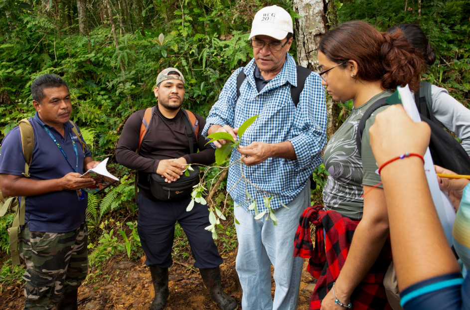

DestacadoSemillas para un futuro
Un curso para conocer la biodiversidad de nuestros bosques, A través de un curso de dendrología, el estudio de la taxonomía de plantas leñosas en ausencia de flores o frutos, dos expertos en diversidad forestal buscan dejar un legado de conocimiento para futuras generaciones.
Leer más